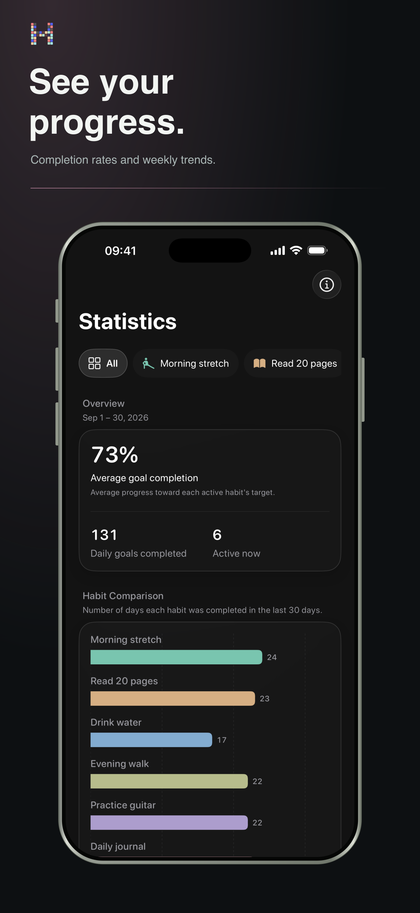

Patterns, not pressure
Understand what helps you return.
See streaks, completion rates and longer-term patterns without turning your routine into a spreadsheet.
- Current and best streaks
- Completion trends and distribution
- Weekly, monthly and yearly context